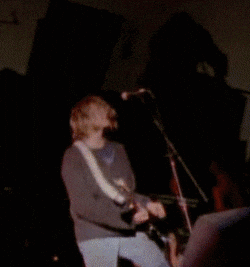

«Всё можно пережить, если подобрана правильная песня.» — Курт Кобейн
Начало работы сайта (v1.0): 29.06.2026, 15:45 (VLAT)
Обновление (v1.1): 29.06.2026, 16:18 (VLAT) — добавлен favicon
© 2026 Ярослав. Все права защищены.